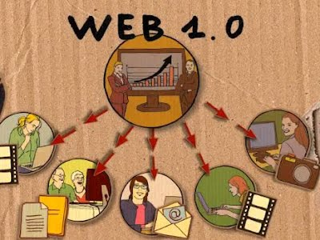
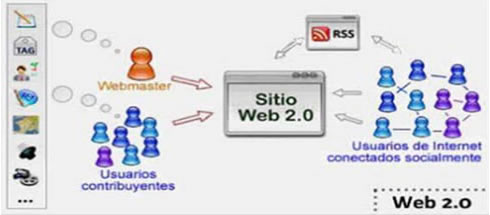

LINEA DEL TIEMPO EVOLUCION DE LA WEB
SEBASTIAN GARCIA PAOLA
Web 1.0

La web 1.0, fue la primera (apareció hacia 1990) y en ella solo se podía consumir contenido.
Se trataba de información a la que se podía acceder, pero sin posibilidad de interactuar; era unidireccional.
Web 2.0

La web 2.0, (apareció en 2004) y contiene los foros, los blogs, los comentarios y después las redes sociales.
La web 2.0 permite compartir información. Y aquí estamos, de momento la mayor parte de los consumidores.
Web 3.0
La web 3.0 (fue operativa en el 2010) y se asocia a la web semántica,
un concepto que se refiere al uso de un lenguaje en la red.
Por ejemplo, la búsqueda de contenidos utilizando palabras clave.
Web 4.0

La web 4.0. empezó en el 2016 y se centra en ofrecer un comportamiento más inteligente y
más predictivo, de modo que podamos, con sólo realizar una afirmación o una llamada,
poner en marcha un conjunto de acciones que tendrán como resultando aquello que pedimos, deseamos o decimos
VOLVER AL INICIO